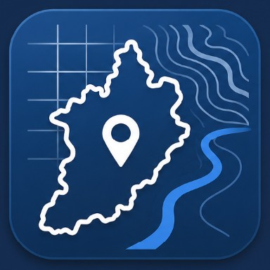
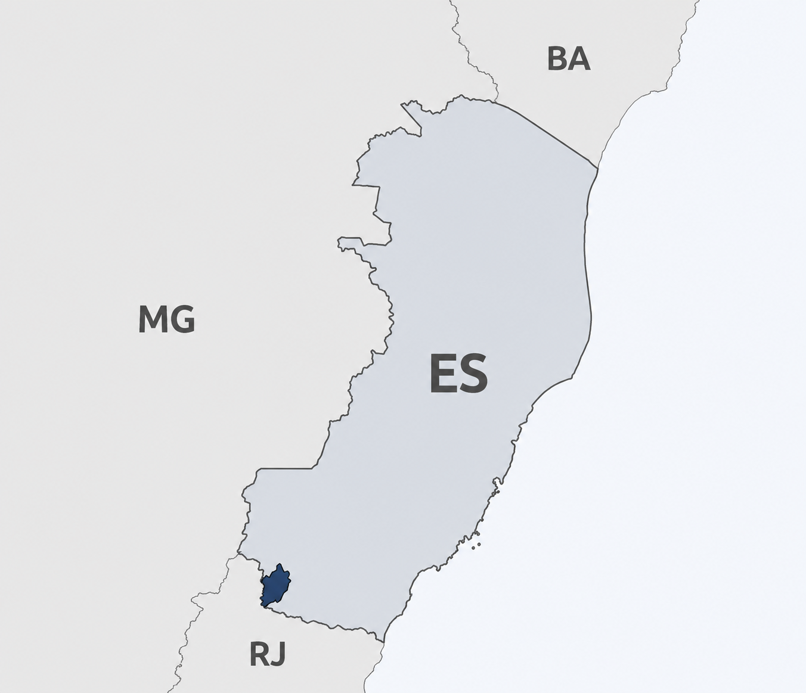

Planejamento Territorial · Meio Ambiente · Infraestrutura Municipal
Explore dados territoriais, ambientais e de infraestrutura do município em uma plataforma interativa.
O Geoportal de São José do Calçado foi desenvolvido para integrar, visualizar e consultar informações territoriais, ambientais e de infraestrutura do município em uma plataforma WebGIS interativa.
A ferramenta tem como objetivo apoiar o planejamento territorial, a gestão ambiental e a consulta de dados geoespaciais por gestores, técnicos, pesquisadores e pela população.
Disponibilizar uma base cartográfica municipal integrada, reunindo informações administrativas, ambientais, rurais, viárias, hidrográficas e de uso e cobertura da terra, contribuindo para o conhecimento, análise e gestão do território municipal.
Os dados utilizados no Geoportal foram obtidos, organizados e processados a partir de bases públicas e municipais, incluindo:
Desenvolvimento, organização dos dados, processamento geoespacial e estruturação da plataforma:
Contato e redes:
linktr.ee/marcosabortoliniVersão Beta 1.0 · Julho de 2026
Desenvolvimento independente.

-20.9123, -41.6547
UTM Zona 24S: 241234 7689123
A exportação pode variar conforme o mapa base e o ambiente de execução. Para melhor resultado, utilize o servidor local ou a versão online do Geoportal.
